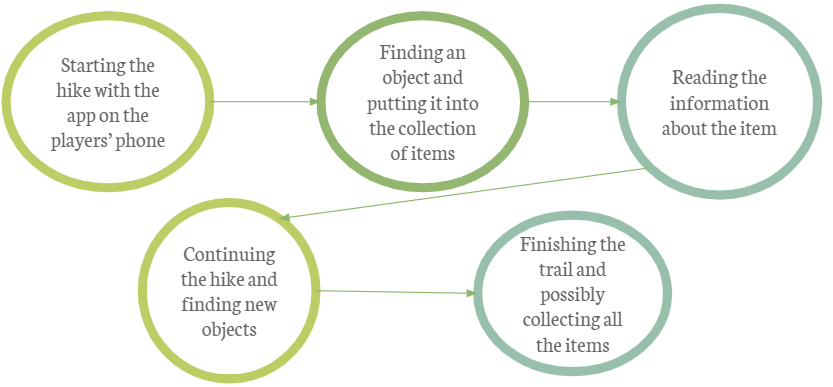

About the project
This website presents our project, an augmented reality game application that enables the users to enrich their experience while exploring the famous Via della Lana e della Seta. We are a group of university students of the DHDK programme at the University of Bologna, Italy. We have created this project for the course Intangible Artifacts, Cultural Heritage and Multimedia taught by Prof. Sofia Pescarin.
Specifications of the project
Context
1 – Context: The wool and silk route starting from Bologna 2 – Problems: GPS, mobile data might not work during the hike, charging the battery of the phones/power banks 3- Most important and relevant aspects: CH: historical items that players collect on the trail with a focus on the history of the area (e.g. objects from WW2 ) ICH: the landscapce, the historic nature of the trail and its importance: links historically/culturally important places, trade route
Needs and requirements
1 –Users: Hikers who wish to enrich their hiking experience with historical, cultural knowledge. Keeping in mind all the problems they could face while playing (e.g. no GPS signals, etc.)🡪 solution: the game has to work offline 2- Goals: Learning more about the natural, historical, cultural heritage of the path while doing the hike, a mindset that resonates with the idea of Life-long learning.
Constraints and needs
1- Possible Spaces: The path of the wool and silk route (+ possibly other trails in Italy) 2- Constraints: Lack of historical objects Lack of particular vegetation (in different seasons) Lack of GPS and Internet connection Limitating freedom (to find objects, hikers have to walk a certain way) Weather conditions 3- Possible budget: Funds from European and Regional funds because its an educational project connected to Life-long Learning.
Scope and designn
1- Focus of the project and scope: hiking and finding CH and ICH objects to enrich the experience of hiking through items related to History, culture and nature. Developing a project that supports Life-long learning Scope: finding all of the objects and bonus options: free meal in a restaurant with the creator of the game gaining access to collectible objects in another game Collecting all objects from all Italian trails leads to winning a trip
Design solution
1-Design solution, including it in spaces: natural objects+ historical objects found during the hike in nature combined with objects found at the landmarks and monuments on the trail (e.g. the objects of monks in the Santa Maria Abbey in Montepiano)
Gameplay diagram
Watch the game trailer
Curious about the game? Watch the video below to follow Viola, an invented character for beta testing, on her hike using the app.
Narrative design
The hiker/gamer starts the game by choosing his/her avatar. Once they have chosen the avatar,the virtual path starts together with the real one in Via della Lana e della Seta . Thanks to GPS and GIS map the game starts exactly where the user is located. The hiker will find different 3D objects hidden in the main stops of the virtual path and he/she will be able to catch them inside some mystery boxes, collect them as playing cards and use them to solve puzzles and enigmas related to Via della Lana e della Setaenvironment. Moreover, thanks to some QR codes located in the main historic and naturalistic spots the user will be able to have further information (video and texts) scanning the codes. Therefore, this game combines the experience of hiking with the thrill of a "treasure hunt" and is able to provide educational content, mainly connected to history, culture, geography and biology. Each player creates their own story as this augmented reality game moves away from the computer and blurs the lines between reality and the game experience.
Character Design
We created 2 realistic characters for fun or for use it our creative projects. The users can select their avatars at the beginning of the game.
Environment Design
DESCRIPTION

Gameplay and mechanics design
“This itinerary, which boasts Medieval architecture and industrial archaeology linked to textile production, connects two cities already joined by their productive history: Bologna, the city of the Lock and canals and centuries’ old silk capital, and Prato, the city of the Cavalciotto, millstreams and fulling mills, capital of the wool and textile district”.
Team
Meet our team:

Deniz Tural
Character design
Ginevra Ravazzini
Narrative design
Giulia Massimino
Gameplay and mechanics design, narrative design
Sara Amayeh
Environment designSzilvia Baráth
Website, narrative designContact
Send us an email with your questions, feedback or comments about the project or find us at the University of Bologna.